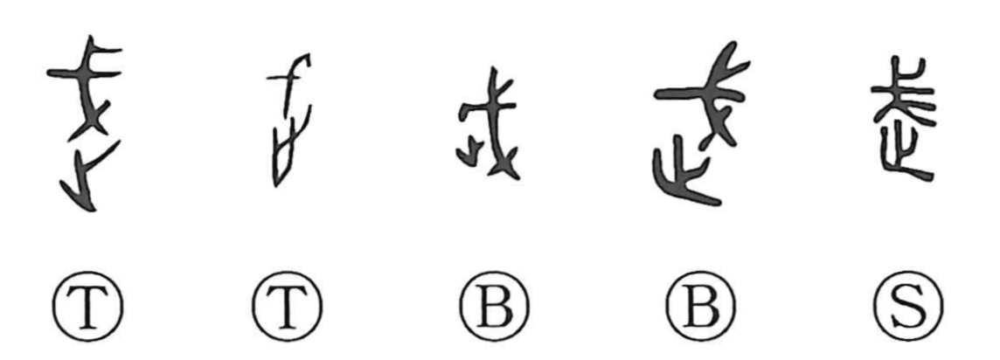

武

Kun: takeshi | On: bu, mu
martial ・ military ・ warrior ・ bravery ・ strength
Explanation
武 is a compound of 戈, the halberd, and a ‘going’ element that in oracle-bone script is written like 之, originally the form of a footstep. The character thus pictures advancing with a weapon in hand: to grasp the pike and move forward. From this image arise senses of boldness and strength—brave, fierce, strong—and by extension the idea of the warrior and the martial. In classical thought it stands as a virtue paired with 文, the civil, together forming the balanced ideal of bunbu, “pen and sword,” with 武徳, martial virtue, especially esteeming courage.